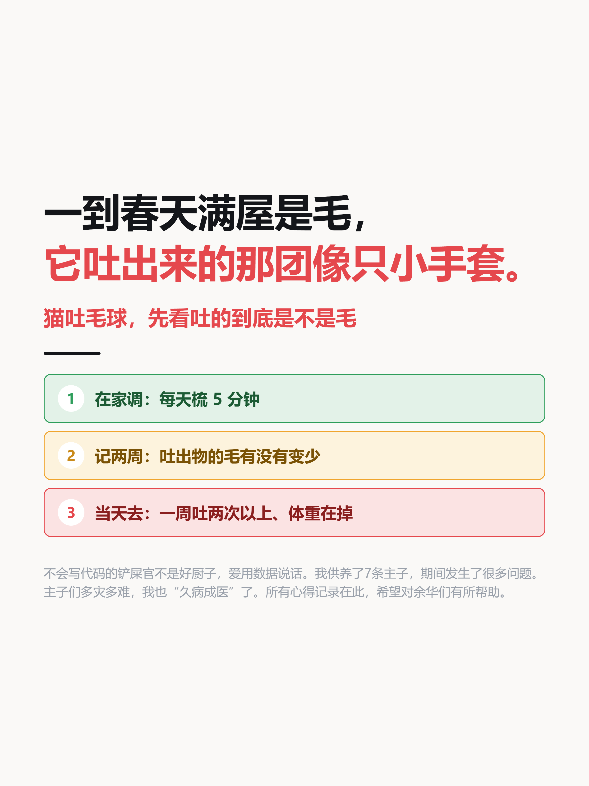
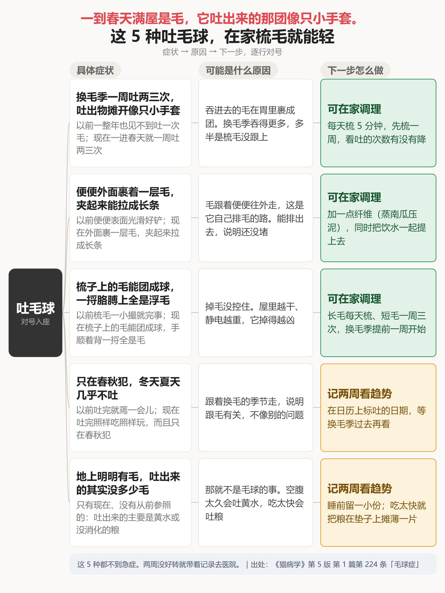
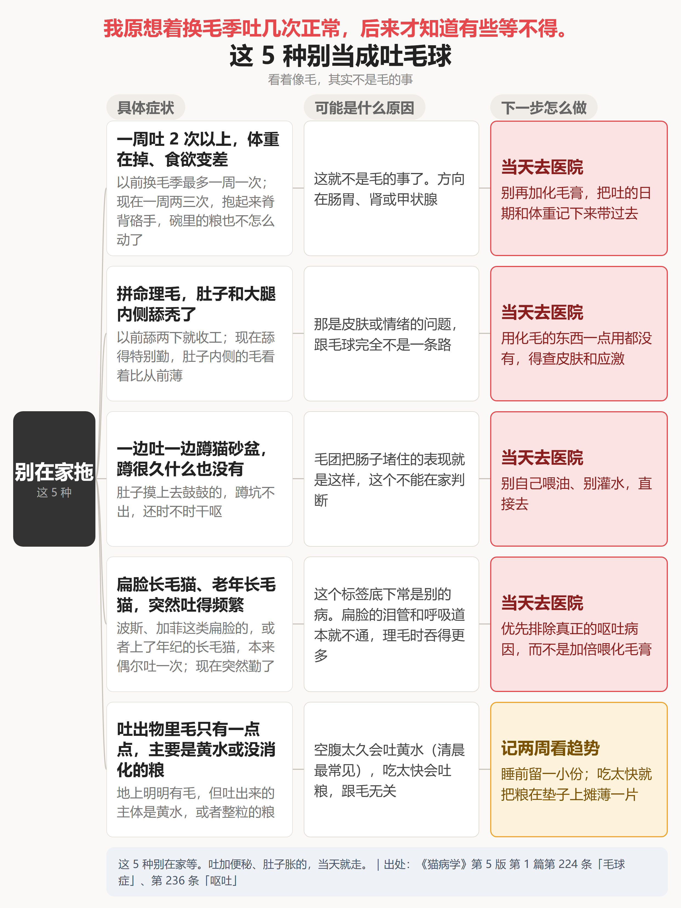
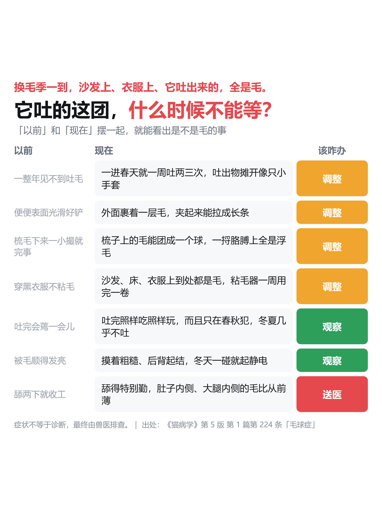
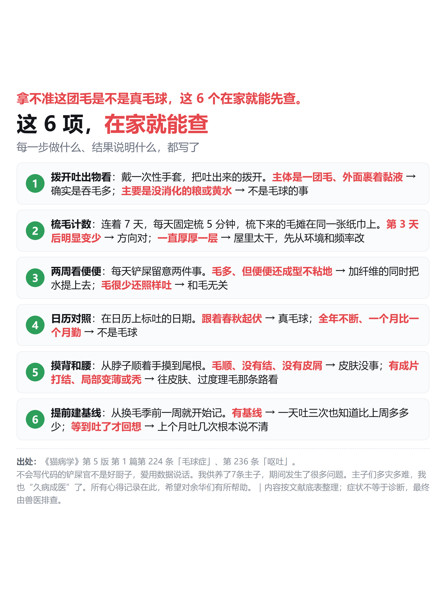
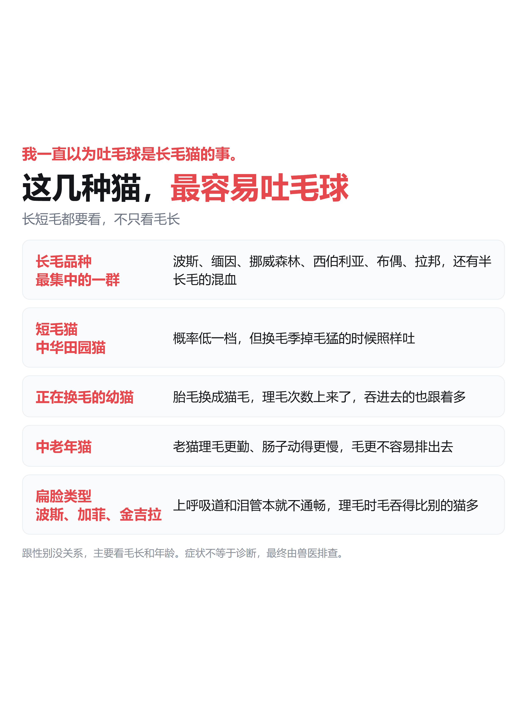
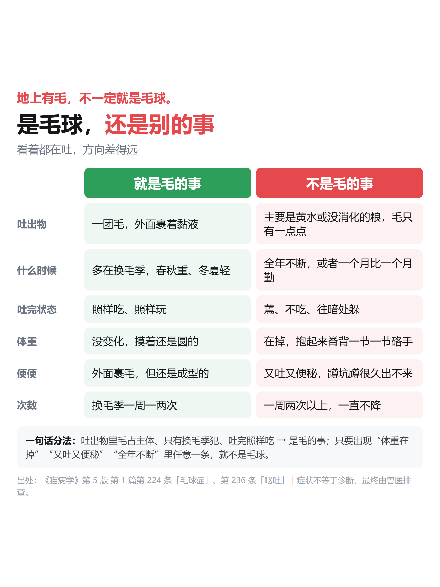
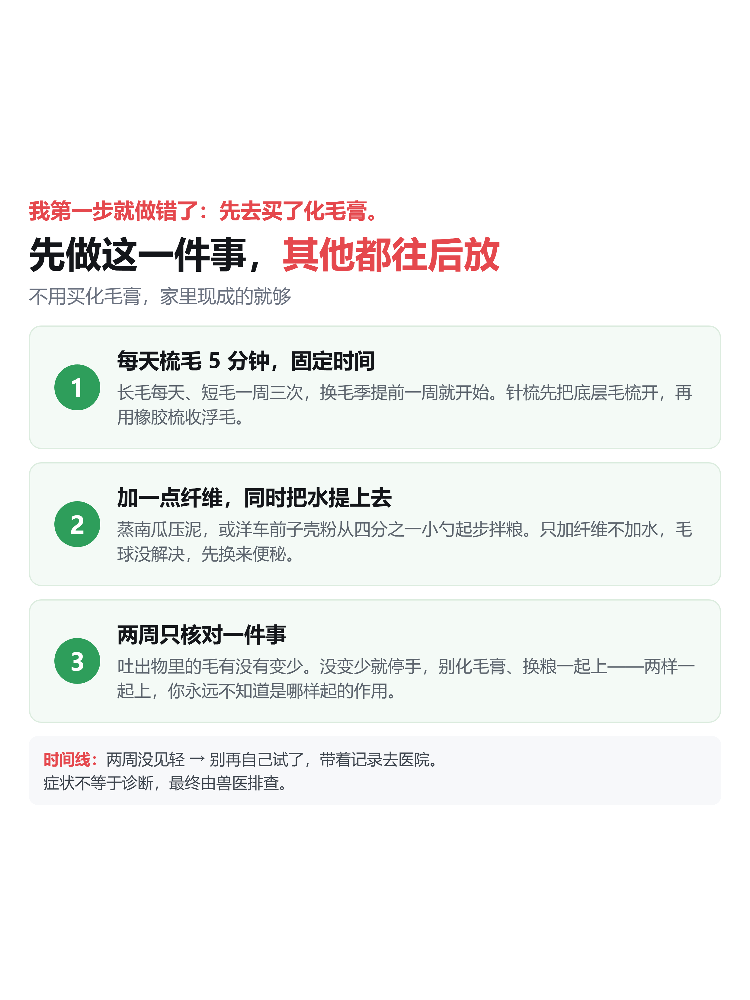
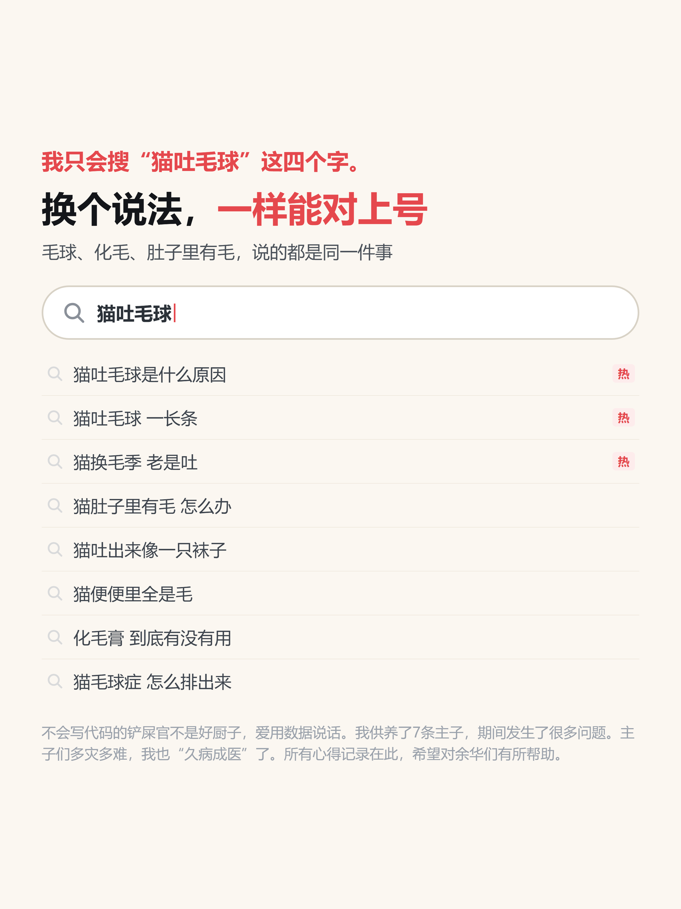
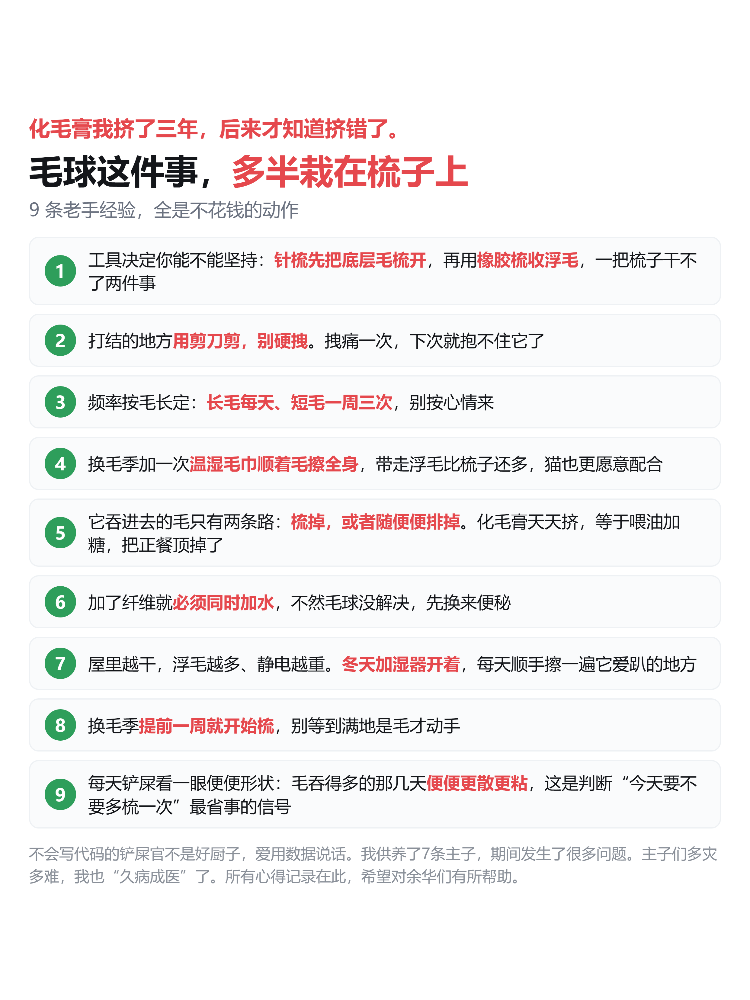

05 吐毛球 · 两期发布预览
第一期 = 判断（5 图）｜第二期 = 怎么办（6 图）
图可左右滑动；下面是该期的发布文案
定稿 2026-10-12 ｜ 11 图 + 2 文案 ｜ 画布统一 1242×1656（3:4）｜ 版式照抄骨架｜ 变化位②：搜索框模拟
第一期 · 判断（5 图）
读者先要知道：这团毛，到底是不是毛球？
← 左右滑动看图 →

图0 · 情绪封面
信息流用

图1 · 四列全链 A
先在家处理的 5 种

图2 · 四列全链 B
别在家拖的 5 种

图3 · 决策树
以前 → 现在 → 该咋办

图4 · 六个自测
今晚在家就能查
发布文案
猫吐毛球，先看吐的到底是不是毛主推 · 15 字
（骨架稿，等你按自己的角度口语化后再定）
换毛季一到，沙发上、衣服上全是毛。
它吐出来的那团，摊开像只小手套。
我先去买的是化毛膏，后来才知道买错了。
每天梳 5 分钟，先梳一周，看吐的次数有没有降。
吐完照样吃照样玩，多半就是毛的事。
一周两次以上、体重在掉，就不是了。
一共 5 张。两张用来对号，一张用来定路，一张留给你今晚动手。第一张收 5 种能在家处理的，第二张收 5 种别在家拖的。第三张把三条路摆出来，走哪条一目了然。最后一张是 6 个自测。
出处：《猫病学》第 5 版第 1 篇第 224 条「毛球症」、第 236 条「呕吐」。
症状不等于诊断：这里只帮你分方向，最终由兽医排查。
下一篇讲：判断完了，到底该做哪几件事。
（本内容为 AI 辅助整理，资料出处已标注，请以兽医判断为准。）
#猫吐毛球 #猫咪换毛 #科学养猫 #养猫新手 #猫咪健康
备选标题
2猫吐毛球别急着买化毛膏，先梳一周（17 字）
3猫吐毛球一周两次以上，就别在家等了（17 字）
第二期 · 怎么办（6 图）
承接第一期：判断完了，到底该做哪几件事
← 左右滑动看图 →

图1 · 哪几种猫眼睛最不省心

图2 · 是毛球还是别的事

图4 · 先做这 3 件事

图5 · 搜索框模拟（变化位②）

图6 · 小技巧 9 条
发布文案
猫吐毛球，先做这一件事就行主推 · 14 字
（骨架稿，等你按自己的角度口语化后再定）
上一期讲了怎么判断。这一期说怎么办。
先看哪几种猫最容易吐毛球。
再看是毛的事，还是别的事。
然后划一条线：一周吐几次算多。
最该做的一件事，是每天梳 5 分钟。
还有你平时搜的那些说法，都收进来了。
最后 9 条不花钱的经验。
症状不等于诊断，最终由兽医排查。用药必须凭医院处方，这两期不涉及任何用药。
你家猫换毛季吐几次？评论区说，我按情况归类回复。
一共 72 条，我一条条写。想看哪条，评论区点单；想看我怎么养这 7 只，关注我。
下一篇讲：待定（06 定完再补）。
（本内容为 AI 辅助整理，资料出处已标注，请以兽医判断为准。）
#猫吐毛球 #猫咪换毛 #科学养猫 #喂法 #新手养猫
备选标题
2是毛球还是真呕吐，六行就能分清（15 字）
3猫换毛季一周吐几次，才算不正常（15 字）